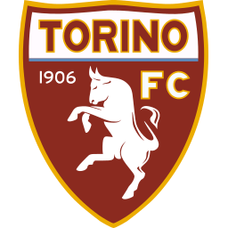

Jogos
100

100 jogos, Serie A, Europa League e artilharia dupla no futebol italiano.
| Competi?o | Jogos | Gols | Assist?ncias |
|---|---|---|---|
| Serie A | 67 | 62 | 63 |
| Copa da It?lia | 6 | 9 | 9 |
| Europa League | 16 | 15 | 6 |
| Champions League | 10 | 8 | 10 |
| Supercopa da It?lia | 1 | 1 | 3 |
| Total | 100 | 95 | 91 |